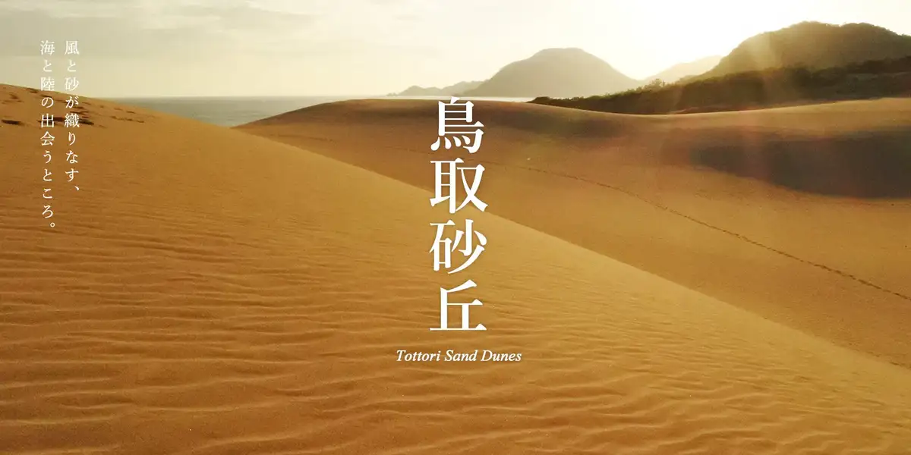
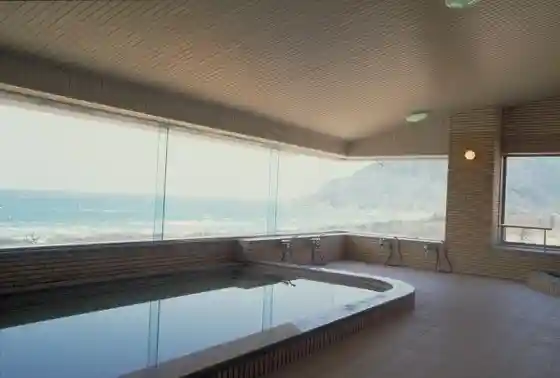
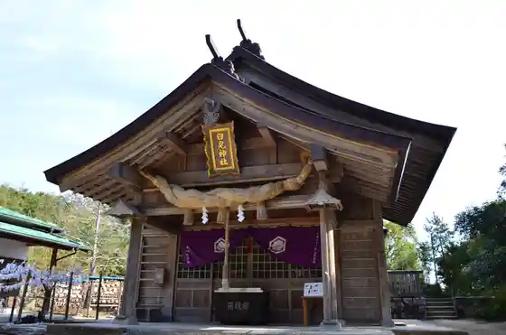

Japan / Tottori / Tottori
Tottori · Tottori
Tottori
Highlighted on the Tottori map.

Tottori City Hall


Sights · Things to do · Places to eat · Places to stay · Day-to-day services
Nearby in Tottori: ← Sakaiminato · Wakasa →
Other towns: Chizu · Daisen · Hiezu · Hino · Hoki · Hokuei · Iwami · Kofu · Kotoura · Kurayoshi · Misasa · Nanbu · Nichinan · Sakaiminato · Wakasa · Yazu · Yonago · Yurihama
All towns in Tottori · Back to all prefectures